ZCU102提升-USB 理论研究
写在开头
最近在研究 ZCU102 的 USB 模块，借此把此 USB 模块及其边缘内容一起研究总结一下。
实物结构
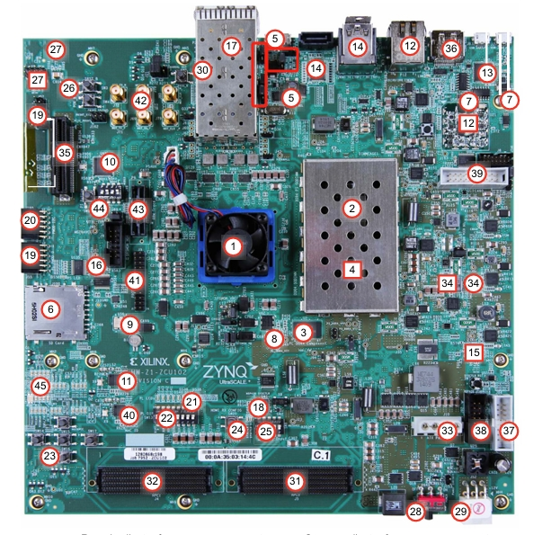
ZCU102 的 USB 接口在图中 5 标，其中用红框圈起来的是跳线位置，关于跳线是什么后面会介绍。
USB 接口为不常见的 Micro USB（3.0） Type-B 接口，主要用于移动硬盘盒。
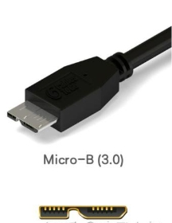
我不是很理解为什么 ZCU102 USB 做成了如此罕见的接口，让使用变得困难，但好在 ZCU102 开发板随箱子附带了 TypeB 转 Type-A 母口的转换器。
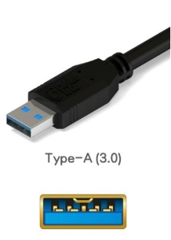
USB 模块架构图
本篇文章以下图作为主线，分别对每个模块展开研究。
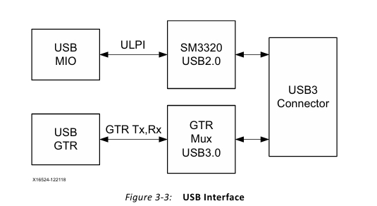
USB MIO
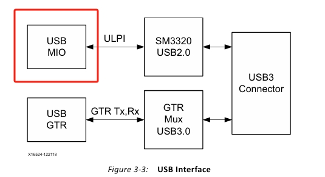
GPIO
GPIO 是一种芯片与外部电路相连接的引脚（划重点），全称是 General Purpose Input Output 通用功能输出输出，目的是实现功能复用，其结构如图所示，左边接到外设、右边接到芯片。
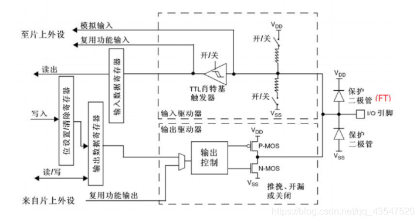
功能复用是指：GPIO的引脚可以由CPU配置成不同的工作模式和工作电压，一共有八种工作模式：上拉输入、下拉输入、浮空输入、模拟输入、推挽输出、开漏输出、复用推挽输出、复用开漏输出。
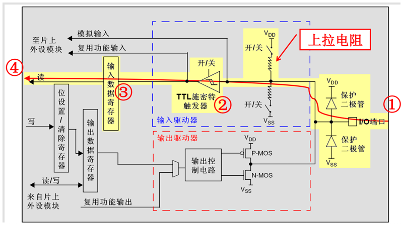
更多工作图示可以参照这两篇文章：
MIO、EMIO、AXI_GPIO
MIO、EMIO、AXI_GPIO 是 Xilinx 对 GPIO 的进一步细化，分别属于 GPIO 的一种类型。
- MIO是属于PS端的固定IO口，使用时不需要消耗PL端的资源；
- EMIO是通过PL进行扩展的IO口，使用时需要分配PL端的引脚，消耗PL端资源，配置完成后和 MIO 一样的用法，属于 PS 端。
- AXI_GPIO是Xilinx封装好的IP核，是 PS 端通过AXI GP总线控制 PL 端的 IO 口技术，使用时需要消耗 PL 端资源。
可以看出，如果要在 PS 使用 GPIO，最好用的是 MIO，其次是 EMIO。
进一步介绍可以参照这篇文章，以上的理解对于本文来说就够了。
USB MIO
回到正题，经过以上的介绍，可以明白 USB MIO 其实就是 左端连接 USB 外设，右端连接芯片的 GPIO。
USB GTR
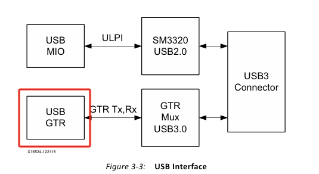
高速收发器简介
UltraScale+ MPSoc FPGA 中集成有三种高速收发器，GTH、GTY和GTR。
- GTH：性能最高，可达 400+Gb/s系统、大规模仿真和高性能计算计算的理想选择。
- GTY：提供 500 Mb/s 至 16.375 Gb/s 的传输速度。
- GTR: 仅用于 PS 端，集成五个通用协议：DisplayPort、Ethernet、SGMII、PCIe、SATA、USB3.0
高速收发器技术
三种收发器底层技术一致、都是 SerDes。SerDes 是 SERializer （串行器）/ DESerializer （解串器）的简称，是一种串行收发技术。串行器在发送端将接收多行并行输入数据，并将其压缩成较少的数据行再串行输出；而解串器就是在接收端，将序列化的串行数据作为输入、恢复并输出原始并行数据。收发通道独立，直接从数据线中提取时钟，所以这种技术只需要两对差分线就能完成全双工高速数据收发，减少了芯片的引脚数和外围 PCB 布线的数量，减少设计的成本及外围电路的布线空间，特别适用于现代高速数字系统。
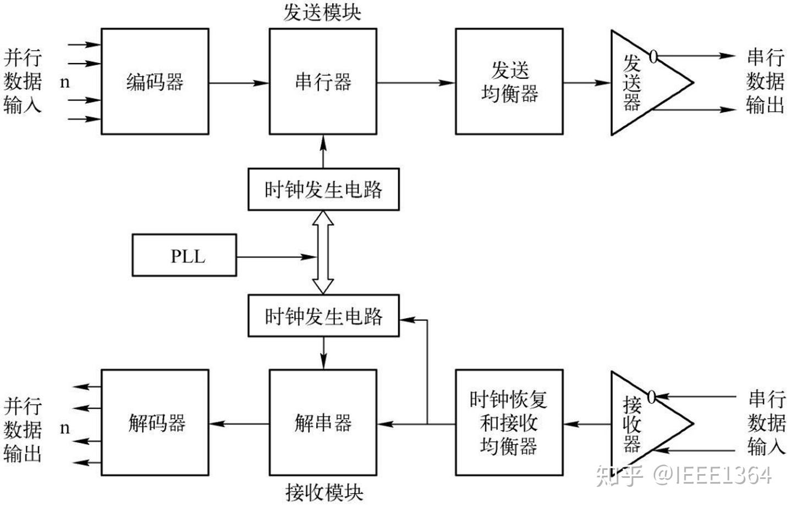
进一步介绍可以参照这篇文章，以上的理解对于本文来说就够了。
ZYNQ UltraScale+ MPSoc FPGA自学笔记-高速收发器
USB GTR
由上可知，USB GTR 其实和 USB MIO 类似，就是左端连接 USB 外设，右端连接芯片的高速收发器。内置支持了 USB 3.0 协议（划重点）。
GTR MUX USB 3.0
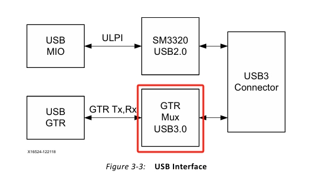
这部分比较简单，这个部件的功能就是将 USB Connector 的信号转换为 GTR tx 以便 USB GTR 接收，将芯片通过 USB GTR 发来的信号转为 USB Connetor 可以发送的信号。
SM3320 USB 2.0
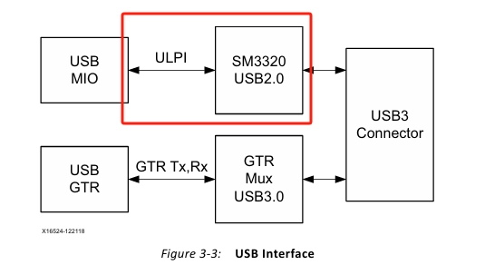
USB3320是一个高速USB 2.0 PHY，支持 UTMI+ 低pin接口(ULPI)接口标准。此为本文重点。
USB PHY
芯片厂商开发了一些USB PHY芯片，可以把DP、DM上的差模信号转成共模信号。
USB PHY负责最底层的信号转换，作用类似于网口的 PHY。
USB信号传输前，需要通过 PHY 把USB控制器的数字信号转成线缆上的模拟信号。
关于什么是数字信号，什么是模拟信号，简单来说，数字信号就是01这样的电平信号，模拟信号就是连续的电压、电流变化。
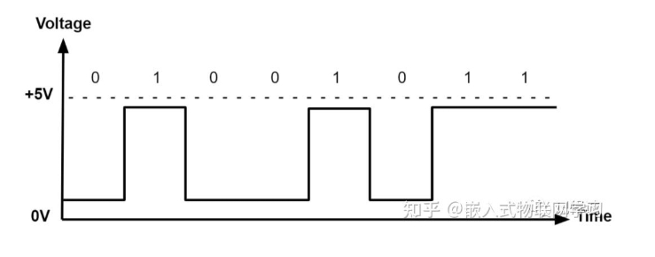
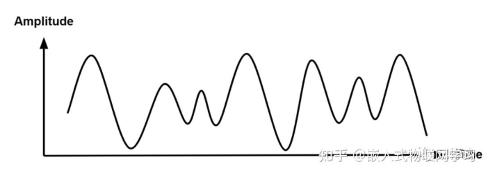
具体可以参照这篇文章：
USB 总线类型
USB 控制器和 PHY 之间的总线主要有3种：一种是ULPI，一种是UTMI+，还有一种是HSIC。
UTMI协议的全称是 USB2.0 Transceiver Macrocell Interface：是一种用于USB controller和USB PHY通信的协议。相对于ULPI，UTMI有更多的控制信号，支持8bit/16bit 数据接口。
ULPI协议的全称是 UTMI+ Low Pin Interface。从名字上就可以看出ULPI是UTMI的Low Pin版本。从一开始给出的结构图可以看到，ZCU102 这里通信总线用的就是 ULPI，目的是为了减少 MIO 口的使用，此观点有 Xilinx 用户手册背书。
更多 USB 内容参考:
控制 SM3320
在 ZCU102 上，SM3320 通过板上跳线装置进行控制，跳线在一开始实物图的红框位置，一共有五处：
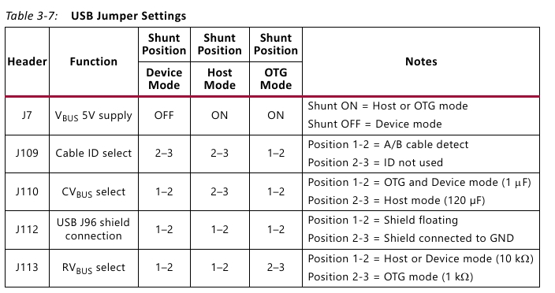
可以移动跳线帽使得 ZCU102 的 USB 处于不同的工作模式。
跳线与跳线帽
跳线是主板上的引脚，如图所示：
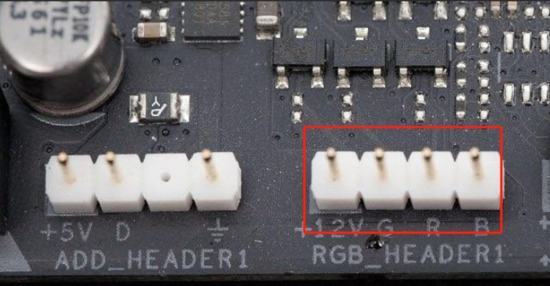
这些引脚可以通过“电线”导通，使得主板电路发生改变，进而使得主板的功能/性能发生改变，而这里的“电线”就是跳线帽：
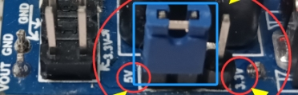
完整定义如下：跳线帽（jumper cap）是一种小型连接器，用于在电路板上的引脚间建立或断开电气连接。它通过手动插拔的方式调整电路功能或配置，从而改变电路行为。
更多可以参考如下文章：
ZCU102 默认跳线
如果未曾手动插拔过 ZCU102 USB 的跳线，那么跳线帽将处于如下的默认位置：
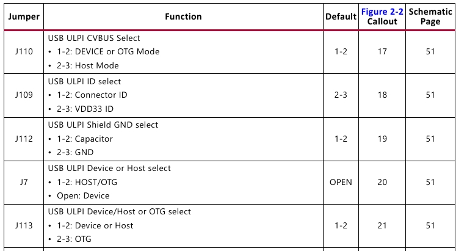
对照一下前面的五处跳线不同位置对应的模式，可以发现 ZCU102 USB 默认是以 Device 模式工作。
USB 工作模式
USB 设备一共有三种工作模式：Device、Host、OTG模式
- Device：设备受到 Host 设备的控制，被动进行数据交互，例如 U 盘，键盘鼠标。
- Host：向 Device 提供电力、主动进行数据交互，控制 Device USB 设备，例如 PC。
- OTG：全称是 On the go。可以通过和连接设备协商成为 Host 或者 Device。
OTG 的出现主要是考虑到手机这样的设备只有一个 USB 口，但其发挥的功能同时涉及了 Host 和 Device，例如连接 PC 传输文件，手机就是 Device，但 U盘连接手机，手机就是 Host。
OTG 的协商通过 USB_ID 这一输入信号完成，连接设备后，USB_ID 脚为低电平则作为 host 端，对外供电；若id脚悬空，则作为 device端。
USB 协议只能是 Host 与 Device 间通信。若不能通信，两端都是 Device 或都是 Host。
更多细节查看下文：
- 《开发板 —— USB的host、device、otg模式》
- USB host、usb device、USB OTG的判断
- USB HOST与 USB OTG的区别及工作原理
- 瑞芯微RK3566开发板USB OTG模式介绍及切换方法，触觉智能EVB3566主板鸿蒙硬件方案详解
区别于 USB 3.0
看到这里，可能会有人好奇，为什么 USB 2.0 需要 SM3320 这样的 PHY 设备，而 USB 3.0 不需要？
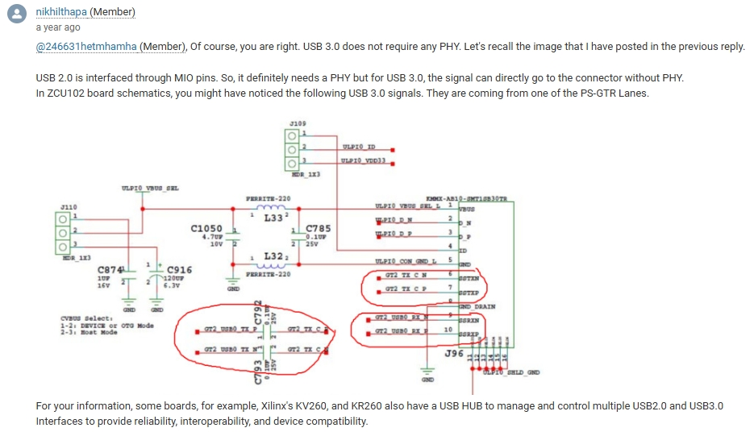
还记得前面画的重点吗？MIO 接受的是电平信号，这是一种数字信号，所以需要 PHY 进行转换。而 USB3.0 直接通过了 GTR 高速收发器完成信号交互，所以不再需要转换。
原文链接如下：
Connector
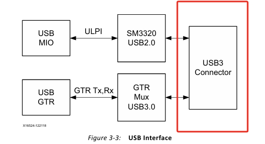
这是全文的最后一部分，也比较简单，这里的 Connector 我认为指的就是前文的 Micro USB（3.0） Type-B 接口。
但值得一提的是，ZCU102 在这个接口上实现了 USB 2.0 和 USB 3.0 的复用。
根据所连接设备，如果支持 3.0，则通过 GTR 这一条路进行交互，否则通过 SM3320 进行交互。
至于如何识别连接设备支持 2.0 还是 3.0，是通过主从设备之间的信息交互完成的，具体参考这篇文章：
写在最后
终于写完这篇文章了，笔者水平有限，学习一个 ZCU102 的 USB 模块发散了很多需要学习的问题，参照了很多前人的文章。
希望后来者可以借此减轻学习负担。如果有错误之处还请海涵。